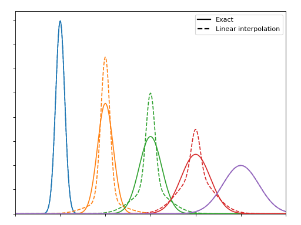
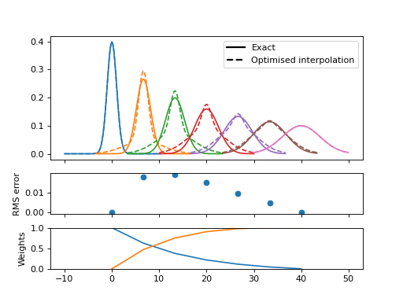
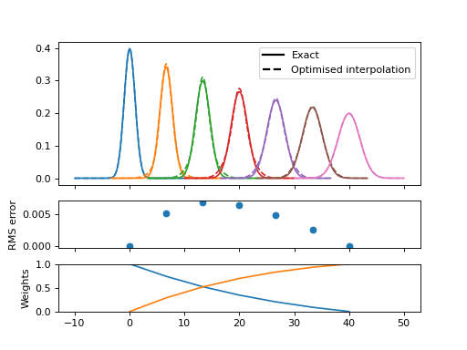
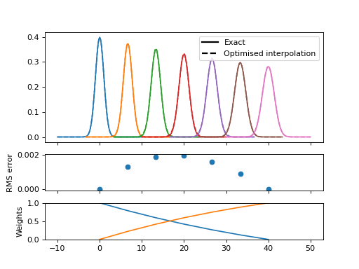
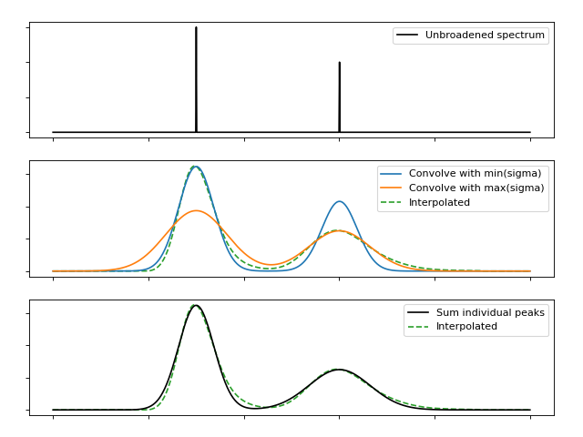
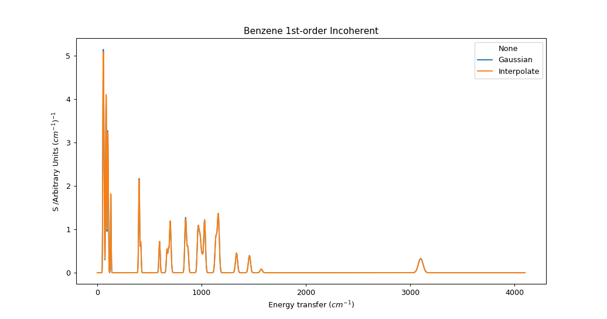
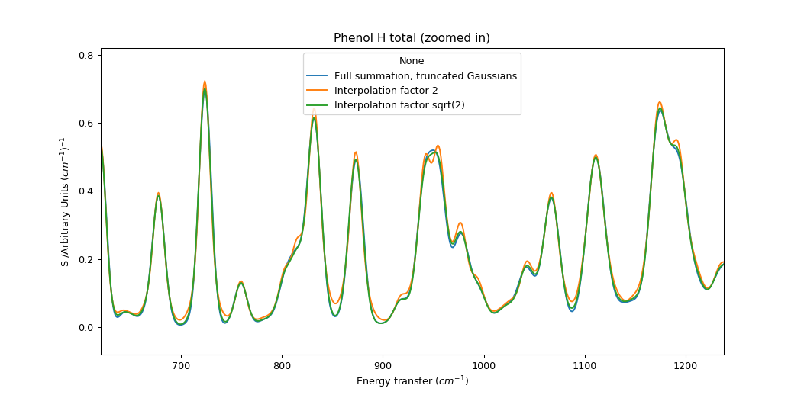

Abins: Fast approximate broadening with “interpolate”¶
The “interpolate” scheme in abins.instruments.broadening
estimates broadened spectra using a limited number of kernel
evaluations or convolution steps in order to reduce the computation
time. The method appears to be novel, so some explanation is needed.
Consider first that we can approximate a Gaussian function by a linear combination of two other Gaussians; one narrower and one wider. If the mixing parameters are linearly based on the relationship between the widths the results are not impressive:
(Source code, png, hires.png, pdf)
{kind=link}
{kind=link}

But if we optimise the mixing parameter at each width then the magnitudes improve significantly, even if the shapes remain distinctly non-Gaussian:
(Source code, png, hires.png, pdf)
{kind=link}
{kind=link}

This error is closely related to the width difference between the endpoints. Here the range is reduced from a factor 4 to a factor 2, and the resulting functions are visually quite convincing
(Source code, png, hires.png, pdf)
{kind=link}
{kind=link}

while a gap of \(\sqrt{2}\) is practically indistinguishable with error below 1% of the peak maximum.
(Source code, png, hires.png, pdf)
{kind=link}
{kind=link}

For TOSCA \(\sigma = a f^2 + b f + c\) where \(a, b, c$ = $10^{-7}, 0.005, 2.5\). For an energy range of 32 cm-1 to 4100 cm-1 sigma ranges from 2.66 to 24.68, which could covered by 5 Gaussians separated by width factor 2 or 9 Gaussians seperated by width factor \(\sqrt{2}\). This could present a significant cost saving compared to full evaluation of ~4000 convolution kernels (one per convolution bin).
We can build on this by performing convolution of the full spectrum with each of the sampled kernels, and then interpolate between the spectra using the predetermined mixing weights. The convolution is performed efficiently using FFTs, and relatively little memory is required to hold this limited number of spectra and interpolate between them.
(Source code, png, hires.png, pdf)
{kind=link}
{kind=link}

This procedure is not strictly equivalent to a summation over frequency-dependent functions, even if there is no interpolation error. At each energy coordinate \(\epsilon\) we “see” a fragment of full spectrum convolved at the same width as any points at \(\epsilon\) would be. In a typical indirect INS spectrum which becomes broader at high energy, this would overestimate the contribution from peaks originating below this \(\epsilon\) and underestimate the contribution from peaks originating above \(\epsilon\). As a result, peaks will appear asymmetric. In practice, the magnitude of this error depends on the rate of change of \(\sigma\) relative to the size of \(\sigma\). In the case of the TOSCA parameters, the error is very small. This should be re-evaluated for other instruments with different energy-dependent broadening functions.

We can see the artefacts of this approach more clearly if we use fewer Gaussians (spaced by factor 2) and zoom in on the spectrum. The interpolation method has a tendency to show small peaks at turning points; this may be related to the imperfection in the shape of the smooth bell.

Category: Concepts